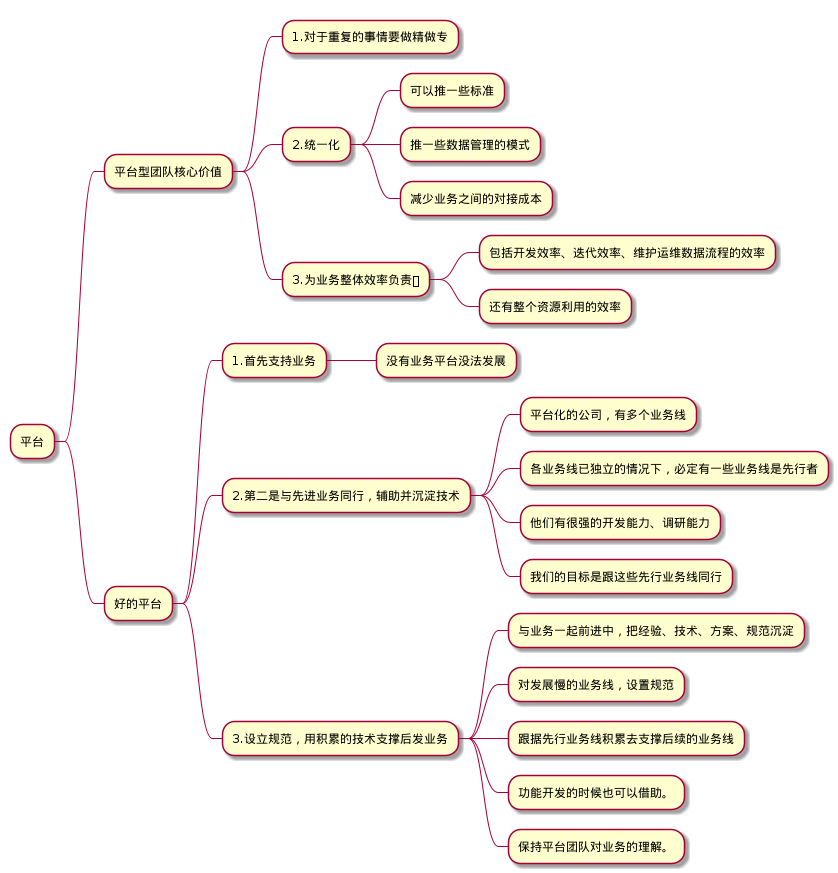

学习方法
Contents:
源码学习
如何高效学习
为何阅读源码
如何阅读源码
如何高效阅读源码
招聘&面试
如何招聘到合适的人
我的面试总结
如何成为一个好的架构师
平台型团队
技术相关
数据分析
架构图
软件架构——C4模型
参考
编译原理
加密相关
云原生相关
云原生应用的12要素
参考
企业架构演化
参考
Severless
云原生学习
1. 起点
容器基本概念
从分布式架构到云原生架构
参考
设计相关
设计思维
扩展阅读
心理学
冰山理论
扩展阅读
简理
实例一
周边
3gpp
参考
学习方法
Docs
»
招聘&面试
»
平台型团队
View page source
平台型团队
¶
